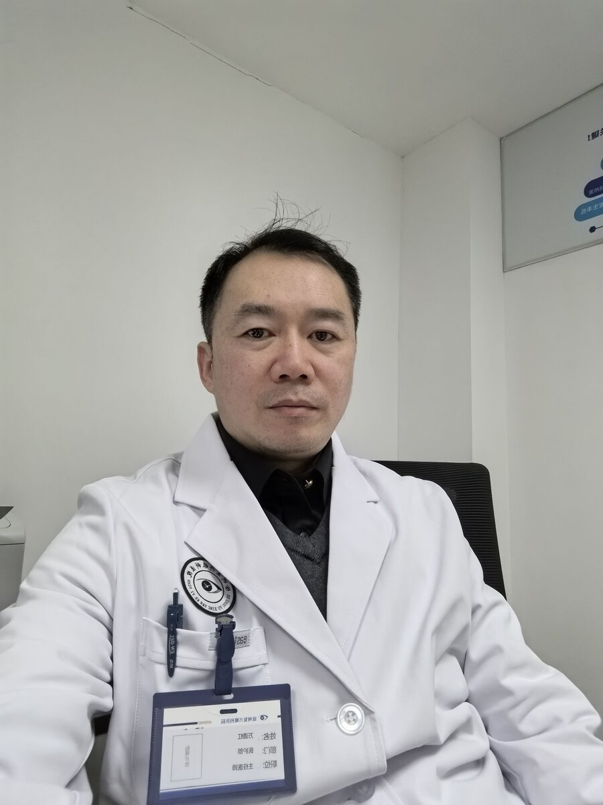
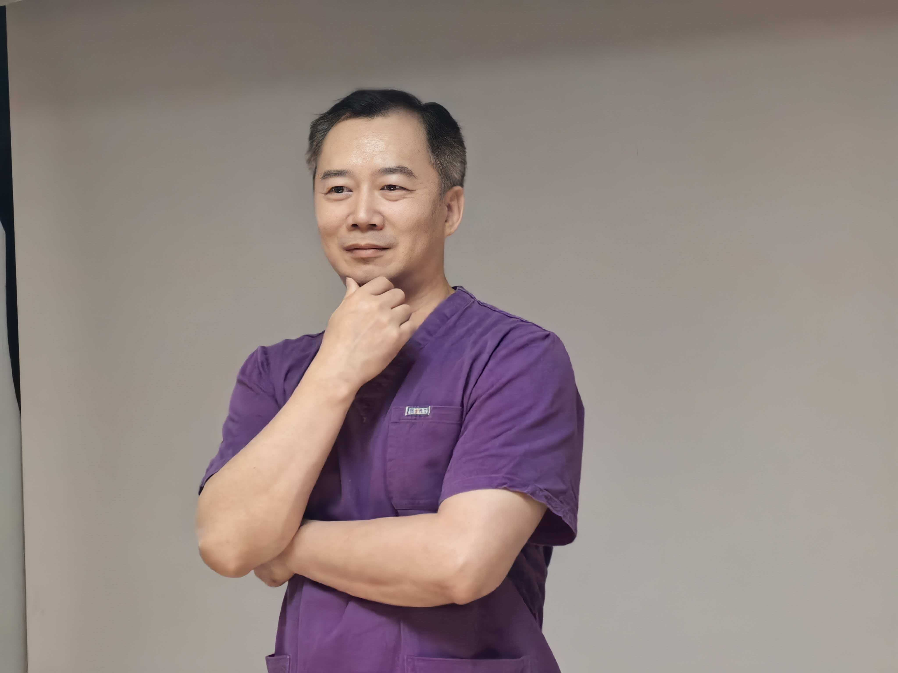
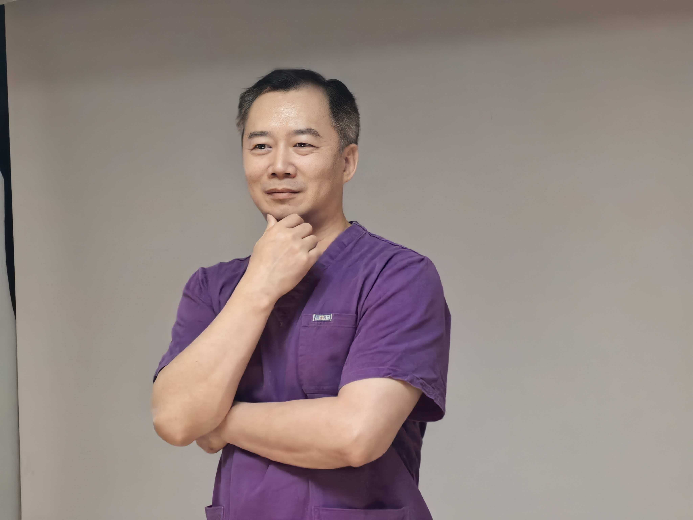

电话
电话员工
医生团队

致辞
守护您的眼睛健康
守护您的眼睛健康
就在您身边
眼睛的健康，是感受幸福人生的重要元素。
万道红屈光性白内障工作室自成立以来，一直致力于提高诊疗技术，积极引进最先进的设备，为地区居民解决各种眼部问题，满足大家"想要治愈"的愿望。
我们认为医疗的基本是"与患者建立心灵沟通的医疗"。
为此，我们的每一位工作人员都必须是您身边值得信赖的存在。
这从现在开始，我们将通过与您的对话，为地区医疗做出贡献。
眼科主任医师 万道红
主任风采
主任简介
- 经历
- 徐州医科大学毕业
从事眼科工作 20 余年，熟练掌握白内障手术及各种并发症处理
- 所属学会・专业医师资格
- 眼科专业医师

外科医生
医师
万道红
眼科工作室主任特别邀请藤田医科大学医学部的堀口正之教授作为执刀医生来我院。堀口教授是视网膜玻璃体手术数量全国第一的医生，是视网膜疾病的权威专家。

本院员工介绍
本院定期举行会议和学习会，
全体员工致力于提高知识和技能。
现有5名视光师在岗，提供眼科医疗支持。
详细工作内容请点击以下链接了解。
我们始终坚持
以患者为本的理念
我们通过提高技术水平和引进最新设备，努力建立能够提供准确诊断和治疗的体系。并进行大量屈光性白内障手术和青光眼相关手术。


团队概况
| 万道红屈光性白内障工作室 | 华夏眼科集团徐州复兴眼科医院 |
|---|---|
| 主任医师 | 万道红 |
| 地址 | 徐州市泉山区中山南路 142 号 |
| 电话号码 | 15996396039 |
| 诊疗时间 | 上午：8:00 〜（接待：8:00 〜 12:00） 下午：14:00 〜（接待：14:00 〜 17:00） |
| 休诊日 | 周四、周六下午、周日及节假日 |
| 停车场 | 医院前后院及周边 |
工作室位置
- 自驾车
- 医院前后院及周边提供停车位，建议提前到达以便寻找停车位
- 乘坐公交车
- 路线公交（搭乘 38 路、63路、47 路、603 路、604 路、专 27 路，云龙山站下），搭乘 11 路、11 附、12 路、35 路、75 路中医院站下，往南步行 200 米